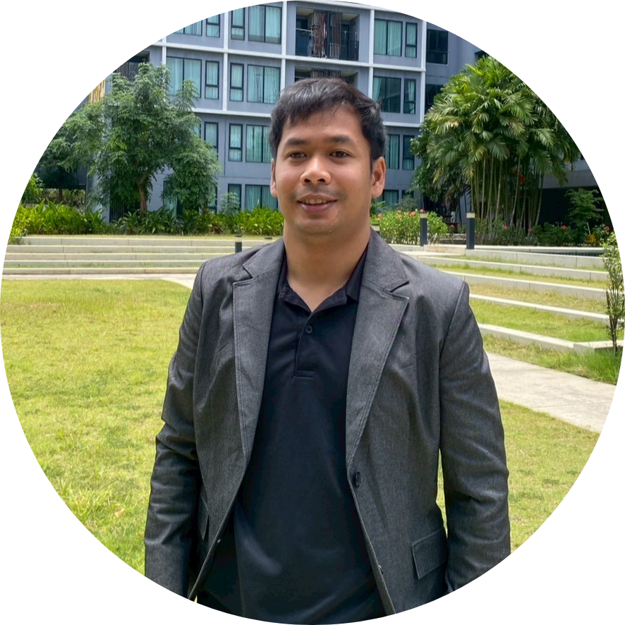

Postdoctoral Researcher, Chulalongkorn University
Hi, I'm Maha.
I am a postdoc at mathcomp, Chulalongkorn University working on synthetic data generation for health and genome data, before that I received my PhD in Computer Science at AIDA Lab, College of Computing, Khon Kaen University. While pursuing my PhD I had a great opportunity on a research internship at Rebecca AI Lab, Feng-Chia University, Taiwan.
About
Currently
- Postdoctoral Researcher at Chulalongkorn University
- Research focus: synthetic data generation, tabular AI, and bioinformatics
- Building a synthetic data platform for healthcare and biomedical data (soon)
- Working as an AI/ML specialist and software developer
Research works
RNA-seq Gene Expression Classification
OngoingEnsemble synthetic data generation methods for gene expression data.
CTGAN-ENN
Hybrid sampling method for churn prediction.
CostLearn GAN
Optimized hybrid sampling method with cost-sensitive learning for churn prediction.
Credit Score Classifier
Multi-class GAN oversampling method.
Talks
International conferences
28 Jun–1 Jul 2023
20th International Joint Conference on Computer Science and Software Engineering (JCSSE)
Phitsanulok, Thailand
View publication →
4–6 Nov 2026
18th International Conference on Genetic and Evolutionary Computing (ICGEC)
Taichung, Taiwan
View conference page →
7 Oct 2026
3rd International Conference on Sustainable Green Tourism Applied Science (ICOSTAS)
Bali, Indonesia
View conference page →
Tech stack
Tools I reach for
Languages
PythonRSQL
ML / DL
GANsDiffusion ModelsEnsemble Models
Data Science
PandasNumPyMatplotlibSHAP
Tools
DockerGitLinux